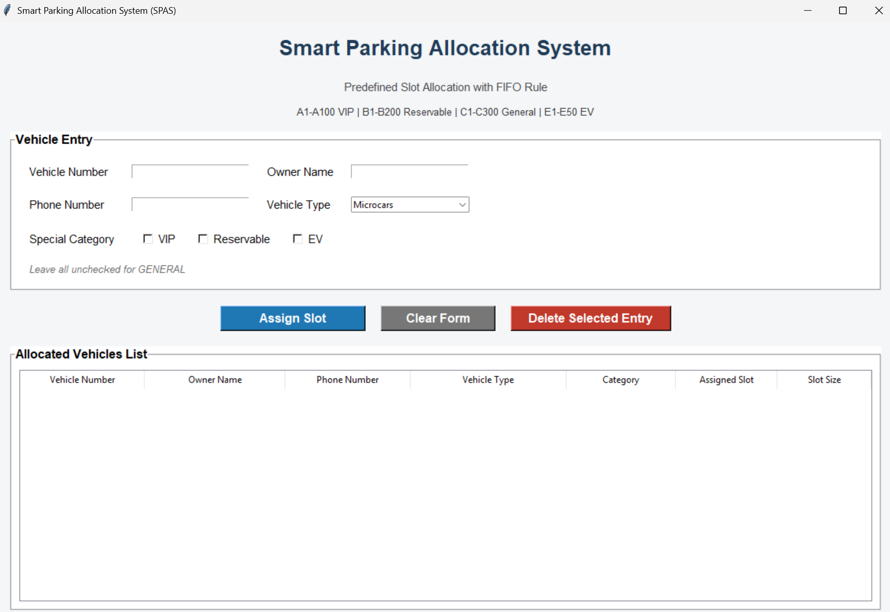

Project overview
Smart Parking Allocation System (SPAS) is designed to allocate parking slots to vehicles using AI reasoning instead of manual assignment. The project follows a structured academic workflow and adapts the required AI pipeline to a practical parking-domain implementation.
The final system focuses on predefined parking slots, constraint validation, category-based allocation, modular implementation, and explainable outputs for academic submission. All CO1 to CO6 are covered through parking-domain implementation, with strongest coverage in formulation, CSP-based allocation, and integrated pipeline execution.
Abstract
SPAS models parking allocation as an Artificial Intelligence problem in which vehicles must be assigned to valid parking slots according to size compatibility, category restrictions, slot availability, and parking rules. The project combines problem representation, candidate exploration, CSP-based validation, utility-based decision support, and integrated reasoning into one complete workflow.
The implementation is designed for professional academic presentation through a GUI interface, modular Python code structure, clean outputs, and a GitHub Pages project showcase.
Problem statement
Vehicles entering a parking area must be assigned to valid slots while satisfying conditions such as size compatibility, slot availability, reserved access, EV charging support, and category-specific rules.
Inputs
- Vehicle number
- Owner name
- Phone number
- Vehicle type
- Special category
Processing
- Vehicle type to size mapping
- Category detection
- Constraint checking
- Slot search and assignment
- Reasoning trace generation
Outputs
- Assigned slot
- Allocation table
- Constraint proof
- Trace summary
- Final integrated output
Predefined parking model
The system uses fixed slot groups instead of manual slot creation, which improves consistency and makes the parking environment realistic for implementation and demonstration.
| Slot Group | Purpose | Size Rule |
|---|---|---|
| A1-A100 | VIP | All large |
| B1-B200 | Reservable | All large |
| C1-C100 | General | Small |
| C101-C200 | General | Medium |
| C201-C300 | General | Large |
| E1-E50 | EV | All large with charger |
Modules covered
Core entity modules
- vehicle.py defines vehicle properties
- slot.py defines parking slot properties
- parking.py manages parking structure and slot groups
Allocation modules
- constraints.py checks allocation validity
- solver.py handles slot solving logic
- decision.py supports best-slot selection
Support modules
- summary.py prepares result summaries
- utils.py contains helper functions
- visualization.py supports output presentation
Execution modules
- gui.py provides user interaction
- main.py runs the main project flow
- pipeline.py integrates the complete workflow
CO1 to CO6 mapping
| CO | Academic expectation | SPAS implementation |
|---|---|---|
| CO1 | Problem formulation and representation | Parking entities, PEAS, slots, vehicles, and constraints |
| CO2 | Search and heuristic analysis | Candidate slot generation and allocation exploration |
| CO3 | CSP modeling and constraint solving | Valid slot assignment with compatibility checks |
| CO4 | Utility-based decision making | Best valid slot selection logic |
| CO5 | Reasoning under uncertainty | Lightweight availability prediction and belief update support |
| CO6 | Integrated explainable AI pipeline | Combined workflow with traces, outputs, and final reasoning flow |
GUI design
The GUI is designed for final submission with simple interaction and clean input validation. Vehicle number is uppercase alphanumeric, owner name is limited to letters and spaces, and phone number is restricted to exactly 10 digits.
Vehicle entry
- Vehicle number
- Owner name
- Phone number
- Vehicle type
Category logic
- VIP checkbox
- Reservable checkbox
- EV checkbox
- No selection = General
Allocation actions
- Assign slot
- Display under list
- Delete selected entry
- Free slot after deletion
Integrated pipeline
SPAS follows a six-stage academic workflow for problem formulation, search, CSP, utility reasoning, uncertainty handling, and integrated explainable output generation.
Formulation
Search
CSP
Utility
Uncertainty
Pipeline
Repository and commands
Repository: https://github.com/TAditya007/SEM-3-project-SPAS
README File: View README.md
GUI preview
The following screenshot shows the GUI-based parking allocation interface used for vehicle entry, category selection, and parking slot assignment.

Expected outputs
- Allocated vehicle list from GUI
- Constraint validation output
- Reasoning trace file
- Utility comparison output
- Uncertainty update output
- Integrated summary report
The final presentation should highlight explainable reasoning, valid allocation logic, and clean result outputs.